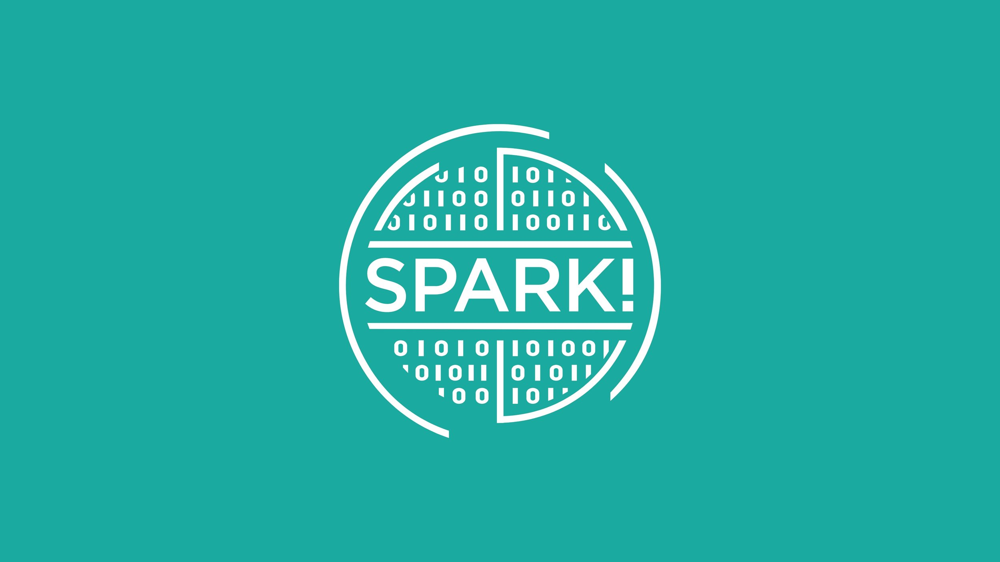

Teaching Assistant | DS280 - Spark! UX Design Workshop
Boston, MA | Jan 2025 – Present
- Assisted in delivering lectures and live demonstrations on UX principles, methodologies, and design thinking frameworks to a class of 20–30 students.
- Led in-class tutorials and workshops, guiding students through hands-on projects and design exercises focused on improving user experience and interface design.
Medical Illustration Intern | Brigham and Women’s Hospital
Boston, MA | Sept 2023 – Dec 2023
- Illustrated multi-paneled medical illustrations detailing an Ultrasound Guided Tumor Resection using Procreate and Adobe Photoshop, totaling over 20 hours of work.
- Observed live-action brain surgery to produce 40+ sketches and a presentation shared with other professionals.
- Maintained communication and organization of resources between Dr. Linda Bi, Professor Lynne Allen, and John Harrington.